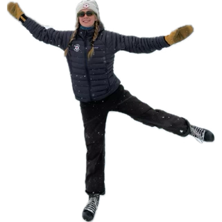
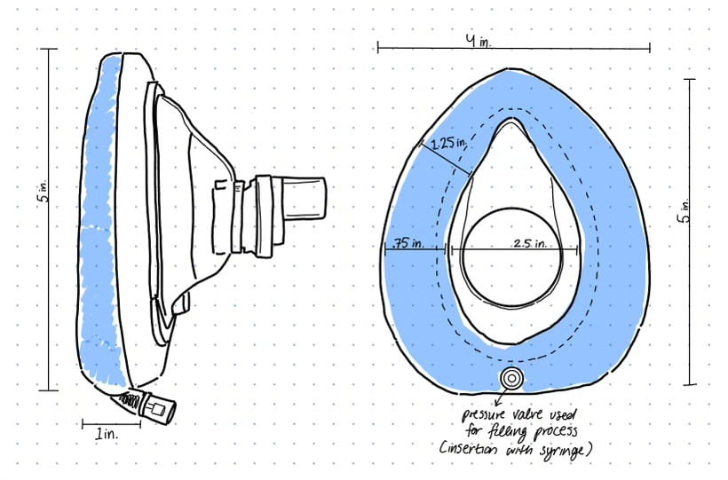
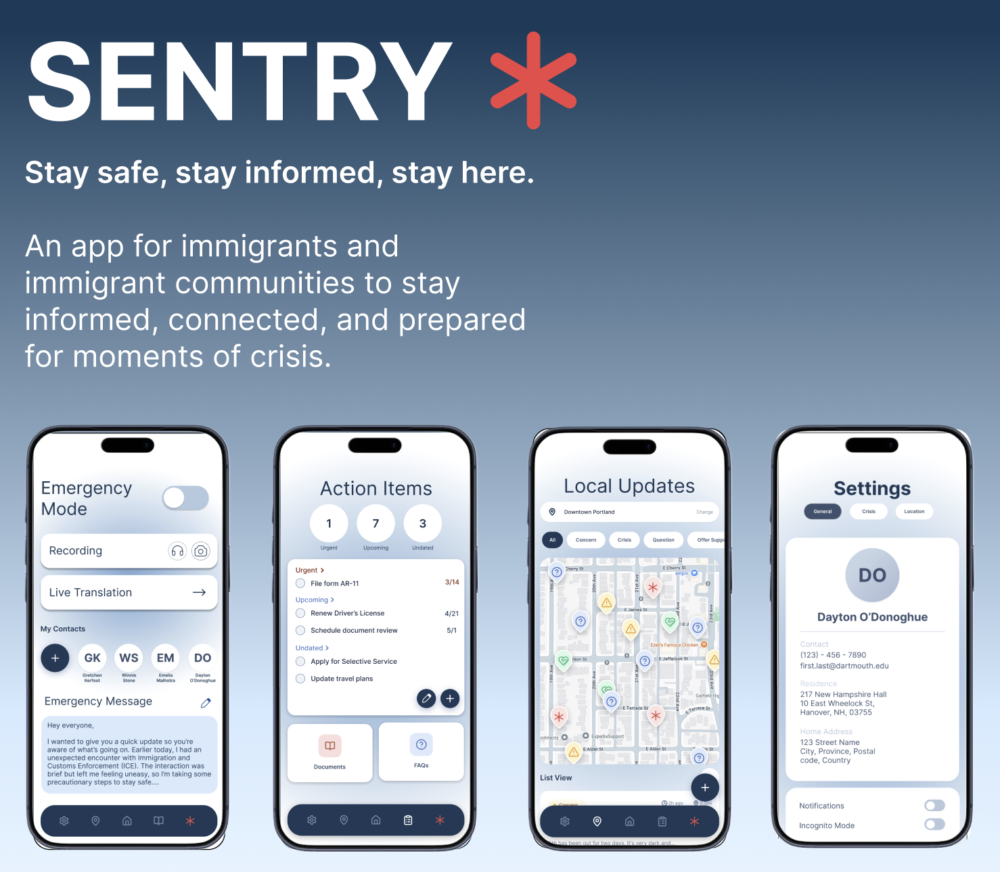

This is my design portfolio. Enjoy!

A collection of recent projects spanning product design, development, and more!
A better social media platform for readers. Think Goodreads meets Letterboxd.
View ProjectHow might we make Dartmouth students identify further with their residential house?
View Project
How might we improve airway seal consistency for novice emergency medical responders operating in cold, prehospital environments?
View Project
A community network designed to keep immigrants informed and prepared.
View ProjectHello! My name is Gretchen, and I am a current junior at Dartmouth College. I study computer science and human-centered design, focusing on the intersection of design thinking with computer programming and product development.
Outside of my studies, I am a member of the Dartmouth Ski Patrol, Sigma Delta sorority, and the Casual Thursday improv troupe. I love skiing, hiking, SCUBA diving, and all things outdoors.